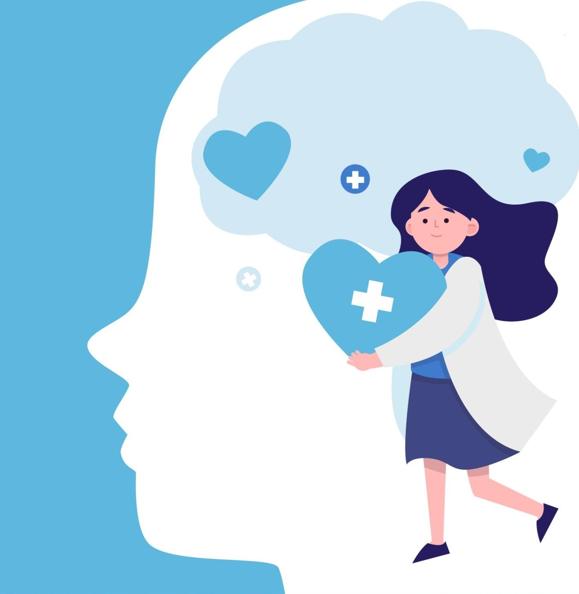

Grupo mais Saúde
Levando informações sobre saúde mental
Serviços de ajuda

Os transtornos mentais sempre dificultaram muito a vida das pessoas, especialmente
durante a pandemia do COVID-19, quando o isolamento e a solidão trouxeram gatilhos que intensificaram
os sentimentos de apatia, tristeza profunda e impotência. Enquanto que esses sentimentos
em si não são sintomas de transtornos, eles podem indicar que algo mais sério está ocorrendo e que
é preciso atenção e cuidado.
Se você sente que algo não vai bem, você não está sozinho. Muitos transtornos podem ser tratados com
terapia, medicação ou a combinação de ambos.
Reunimos aqui uma lista de tratamentos psicológicos e psiquiátricos gratuitos e a preços acessíveis
na cidade de São Paulo. Confira:
Serviços gratuitos
Clínica Social Casa 1
Plantão de escuta semanal para pessoas LGBTQ+.
Atendimento psicoterápico. Interessados devem se inscrever por formulário.
Site: https://www.casaum.org/clinica-social/
Instituto de psicologia da USP
Atendimento psicológico emergencial para pessoas maiores de 18 anos.
Para se inscrever, os interessados devem solicitar atendimento pelo e-mail pap_ipusp@usp.br.
Site: https://www.ip.usp.br/site/plantao-de-acolhimento-psicologico-psicologico-pap/
Clínica Psicológica Ana Maria Poppovic PUC
Atendimento psicológico com modalidades em grupo, casal, família e individual.
É necessário agendar triagem pelo telefone 11 3862-6070 e aguardar instruções por e-mail.
Site: https://www.pucsp.br/clinica/
Centro de Psicologia Aplicada da UNIP
Atendimento psicológico a crianças, adolescentes, adultos, famílias e casais.
Os interessados podem agendar data para a triagem por meio dos telefones das unidades dos CPAs
disponibilizados no site da Unip.
Site: https://www.unip.br/universidade/clinicas/cpa.aspx
Núcleo de Estudo e Atendimento Psicológico da Universidade Cruzeiro do Sul
Atendimento gratuito para jovens e adultos.
Os interessados devem ligar nos telefones das unidades disponibilizadas no site para mais informações
sobre o processo.
Site: https://www.cruzeirodosul.edu.br/nucleo-de-estudo-e-atendimento-psicologico-neap/
PROATA - Programa de Assistência à Pacientes com Transtornos Alimentares. Departamento de Psiquiatria e Psicologia Médica da UNIFESP
Atendimento psicológico (entre outras modalidades) gratuitos para pacientes com transtornos alimentares
(a partir dos 10 anos) e seus familiares.
Os interessados devem preencher um formulário de inscrição para entrar na lista de espera da triagem.
Site: https://www.proata.com.br/tratamento/
Serviços a preços acessíveis
Clínica de Psicologia do Centro Universitário FMU
Atendimento para crianças, jovens e adultos. Preço mensal de R$30,00.
Os interessados devem realizar o agendamento por telefone ou e-mail:
E-mail: ciecs@fmu.br Telefone: (11) 3346-6217 | (11) 3346-6216
Site: https://portal.fmu.br/servico/psicologia/